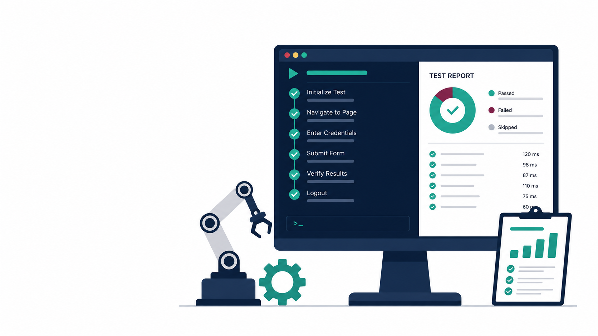
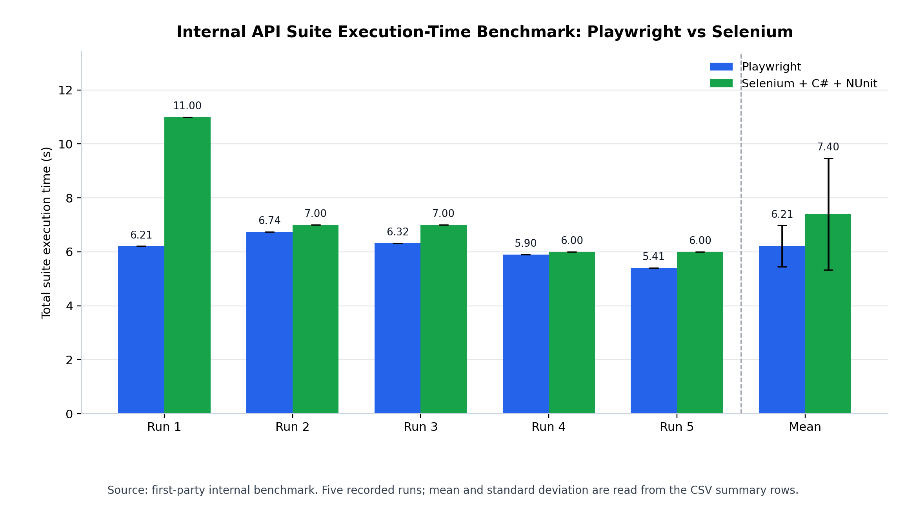
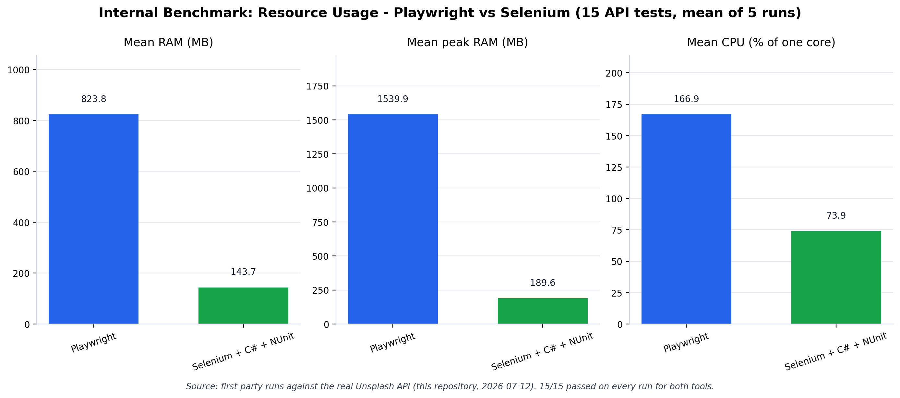

A Comprehensive UI and API Automation Testing Framework Using Playwright
Presented byLe Tiep Tuyen
Student ID22020015
SupervisorDr. Le Dinh Dung
[~15s] Good morning/afternoon. My name is Le Tiep Tuyen, and today I will present my graduation project: a Playwright and TypeScript framework for UI and API automation testing. The framework is demonstrated on selected Unsplash scenarios and evaluated through verified execution evidence.
Overview
Table of Contents
01
Background, problem statement, and research objectives
02
Core framework design and end-to-end methodology
03
Implemented scope, live demonstration, and execution results
04
Internal and external evaluation evidence
05
Limitations, conclusion, and discussion
[~8s] This presentation covers the five main parts shown on the slide.
Background | Core Concept
Manual Testing: Human Execution and Judgment
01
A tester performs the test steps directly in the application.
02
The tester observes the behavior and decides whether it meets the expected result.
03
It is especially valuable for exploration, usability, and situations requiring human judgment.
Manual testing is defined by human execution and interpretation, not by a lack of rigor.
Concept summary aligned with Chapter 2, Section 2.2 and ISTQB CTFL v4.0.1.
[~8s] Manual testing relies on a tester to execute steps and apply human judgment, especially for exploration and usability.
Background | Core Concept
Test Automation: Repeatable Software Execution
01
A tool executes predefined test steps and checks the encoded expected outcomes.
02
The same checks can be rerun consistently and produce structured evidence, such as logs and reports.
03
It is most suitable for stable, repeated regression checks that justify script maintenance.
Automation executes what has been encoded; it complements, rather than replaces, human testing.

Concept summary aligned with Chapter 2, Section 2.2 and the ISTQB test-automation definition.
[~8s] Test automation reruns encoded checks consistently and produces structured evidence. It complements, rather than replaces, human judgment.
Background | Testing Approaches
Manual Testing and Automated Testing Approaches
Dimension
Manual Testing
Automated Testing
Execution
Human tester performs the steps
Tool executes predefined scripts
Judgment
Strong for exploration and usability
Limited to encoded assertions
Evidence
Tester notes, screenshots, informal reports
Logs, reports, traces, structured results
Maintenance
Knowledge may remain informal
Scripts require updates when behavior changes
Cost pattern
Lower initial technical setup
Higher initial setup, reusable over repeated runs
[~10s] Manual testing is strongest where human judgment is required; automation is most useful for stable checks that must be repeated with reviewable evidence.
Background | Automation Value
Automation Value Relative to Manual Testing
Dimension
Manual Testing
Automation in This Framework
Repeatability
Depends on the tester following steps consistently
A single command re-executes the same checks identically
Speed & evidence
Repeated navigation, informal time/notes
18 tests in 28.890057s JUnit XML + HTML report
Human judgment
Strong for exploration, usability, discovery
Limited to the implemented, encoded flows
Risk
Human error during repetitive execution
Scripts can become stale if not maintained
The framework adds repeatable execution and reviewable evidence for selected regression checks, while manual testing remains essential for human judgment.
[~10s] In this framework, automation provides repeatable selected regression checks and reviewable JUnit XML and HTML-report evidence; manual testing remains necessary for human judgment.
Background & Problem
Problem Statement
01
Manual regression checks repeat navigation, data entry, and result verification every run, which is effortful and inconsistent.
02
Sustainable automation requires reusable framework abstractions that improve separation of concerns, reduce duplication, and support long-term test-code maintainability.
03
Without a deliberate, maintainable design, a single UI change can force edits across many scattered files, undermining maintainability and reuse.
This research addresses the problem of designing, implementing, and evaluating a maintainable framework that supports both end-to-end FE UI-level and API-level regression checks.
[~10s] The problem is repetitive regression work and scattered automation scripts that become difficult to maintain. This research addresses both UI and API regression checks through one maintainable framework.
Research Objectives
Research Objectives
01
Analyze how a Playwright and TypeScript framework can structure UI and API automation in a maintainable way.
02
Design and implement reusable framework abstractions that reduce duplication and support long-term maintainability.
03
Evaluate the implemented framework using verified execution evidence, HTML reporting, and JUnit XML output.
04
Identify limitations and future work related to coverage, scalability, reliability, and evaluation depth.
[~10s] These four objectives guide the research: maintainable structure, reusable abstractions, verified evaluation evidence, and clear limitations for future work.
Implementation | Scope
Implemented Test Scope
Suite
Scenarios
Spec files
Tests
UI
Profile view, profile update, bookmarked photos
3
3
API
Public profile, statistics, photos, collections
4
15
Built on Unsplash as the selected demonstration system, a real, modern web application with both a browsable UI and a documented public API.
[~25s] The implemented framework was applied to Unsplash as the selected demonstration system. The UI suite contains three profile-related scenarios. The API suite contains fifteen tests across four specification files for public profile, statistics, photos, and collections. This is a representative scope, not full Unsplash coverage.
Evaluation Live Demonstration
Live Demonstration: Test Run and HTML Report
01
Run the selected UI and API suite with npx playwright test.
02
Open the Playwright HTML report and show the passing result.
03
Connect the live report back to Table 5.5 and the verified evidence.
Recommended demo point: after the implemented scope and before the detailed execution results.
[~20s + demo] At this point I will switch from the slides to the terminal and run the selected suite with npx playwright test. After the run, I will open the Playwright HTML report and show the passing status. This comes directly after the implemented scope, so the audience can see the framework operating before we review the detailed execution evidence. If the live system or network causes a problem, I can still show the saved verified HTML report from the 3 June 2026 run and clearly state that boundary.
Evaluation | Verified Execution Results
Verified Test Execution Results: Per-Specification Breakdown
Specification file
Type
Tests
Failures
Skipped
Time
tests/api/users/get-public-profile.spec.ts
API
3
0
0
4.466s
tests/api/users/get-statistics.spec.ts
API
4
0
0
8.782s
tests/api/users/list-collections.spec.ts
API
4
0
0
4.405s
tests/api/users/list-photos.spec.ts
API
4
0
0
2.254s
tests/ui/profile/bookmarked-photos.spec.ts
UI
1
0
0
13.963s
tests/ui/profile/update-profile.spec.ts
UI
1
0
0
22.199s
tests/ui/profile/view-profile.spec.ts
UI
1
0
0
15.399s
Table 5.6 from the thesis. Every specification file passed with zero failures and zero skipped tests.
[~30s] This table presents the verified execution result by specification file. The four API specification files cover public profile, statistics, collections, and photos, each passing with zero failures. The three UI specification files cover bookmarked photos, profile update, and profile view, also with zero failures. This breakdown is based on the verified JUnit XML result and provides traceability to individual specification files.
Evaluation | Tool Selection Criteria
Tool Selection Criteria and Capability Comparison
Dimension
Playwright
Cypress
Selenium
Browser & platform
Chromium, Firefox, WebKit
Chrome, Firefox, Edge (experimental WebKit)
Broad WebDriver coverage
Synchronization
Actionability / auto-waiting
Retryability for queries/assertions
Explicit / implicit waits
API support
Built-in API testing & request contexts
cy.request() HTTP requests
Needs additional libraries
Reporting & debugging
Built-in HTML/JUnit + trace viewer
Screenshots, videos, configurable reporters
Depends on integrations
Condensed from Table 5.3; the eleven weighted criteria are defined in Table 5.2.
[~35s] For tool comparison, the thesis uses project-specific criteria rather than a generic popularity ranking. The most important dimensions are synchronization, built-in UI and API support, TypeScript architecture fit, and reporting/debugging evidence. Playwright fits this framework strongly because it combines API request contexts, browser automation, fixtures, HTML/JUnit reporting, and trace support in one ecosystem.
Evaluation | Internal Benchmark
Internal Benchmark: Playwright and Selenium
Comparison Basis
One-to-one API test scope
15 API tests across public profile, statistics, collections, and photos
Same endpoints, assertions, real Unsplash API, and test account
5 runs per framework; 15/15 tests passed on every run
Measurement and Boundary
Process-scoped resource sampling
Average execution time, mean/peak RAM, and CPU percentage of one core
PowerShell samples the test child-process tree every 500 ms
This measures observed suite throughput for the recorded configurations, not hardware-normalized per-test speed.
[~18s] This internal benchmark compares the same fifteen API tests over five runs per framework; every run passed. It reports average execution time, RAM, and CPU for the recorded configurations.
Evaluation | Internal Experimental Benchmark
Internal API Suite Execution-Time Comparison
Scope
15 API tests, five recorded runs per framework; every run passed 15/15 tests.
Mean
6.21s for Playwright versus 7.40s for Selenium.
Difference
1.19s or 16.1% lower total suite execution time for Playwright.
For the recorded 15-test API suite, Playwright achieved a 1.19-second, or 16.1%, lower total suite execution time than the sequential Selenium configuration.

Source: Internal Experimental Benchmark. Total execution time for the complete API suite.
[~15s] This chart compares the average total execution time of the same fifteen-test API suite. Playwright averaged 6.21 seconds versus Selenium's 7.40 seconds, so it completed the recorded suite 1.19 seconds, or 16.1 percent, sooner.
Evaluation | Internal Experimental Benchmark
Internal API Resource-Utilization Comparison
Mean RAM
823.8 MB versus 143.7 MB: Playwright used 5.7x more.
Peak RAM
1539.9 MB versus 189.6 MB: Playwright used 8.1x more.
CPU
166.9% versus 73.9% of one core: 2.3x higher.
The 1.19-second execution-time advantage was accompanied by 5.7x higher mean RAM and 2.3x higher CPU use under Playwright's parallel, isolated execution model.

Source: Internal Experimental Benchmark. Five-run mean; resource measurements follow the test child-process tree.
[~18s] This chart shows the resource cost of that faster suite completion. Playwright used 823.8 MB mean RAM versus 143.7 MB, 1,539.9 MB peak RAM versus 189.6 MB, and 166.9% CPU versus 73.9%; this is the trade-off of its parallel, isolated execution model.
Evaluation | Practical Comparison
Comparative Assessment: Playwright and Selenium
Dimension
Playwright in This Framework
Selenium + C# + NUnit
Execution model
Clean-slate BrowserContext per test; independent state prevents failure carry-over
Sequential by default in this setup; no built-in BrowserContext isolation model, so isolation relies on test-runner and WebDriver lifecycle design
Synchronization
Auto-waiting plus auto-retrying, web-first assertions
Explicit or implicit waits managed in the test design
UI + API workflow
Browser contexts and API request contexts in one test runner
WebDriver for UI; API support assembled through additional tooling
Evidence and debugging
Built-in HTML/JUnit reporters and Trace Viewer
TRX output plus separately configured reporting and debugging tools
Observed internal trade-off
6.21s API-suite mean; higher RAM and CPU use
7.40s API-suite mean; lower RAM and CPU use
For this project, Playwright combines higher observed suite throughput with native UI/API and evidence support, while accepting a higher resource cost.
[~55s] These internal results are easier to read when we combine them with the framework capabilities. The first strength is test isolation. Playwright gives each test a clean browser context with its own state, such as cookies and storage. That prevents state leaking from one test into another, avoids failure carry-over, and makes parallel execution more reliable. It also provides auto-waiting and auto-retrying web-first assertions for dynamic pages, plus browser contexts and API request contexts in one test runner. For evidence, HTML and JUnit reporters work alongside Trace Viewer. In the recorded benchmark, Playwright finished the API suite in 6.21 seconds, while Selenium averaged 7.40 seconds. In this Selenium and NUnit setup, execution is sequential by default and there is no built-in BrowserContext isolation model. Isolation and parallel execution must be designed through the test runner and WebDriver lifecycle. So the conclusion is project-fit, not a universal winner: Playwright gives this UI and API framework an integrated workflow and higher observed suite throughput, with the explicit trade-off of higher RAM and CPU use.
Percentage of continuous operation. Selenium: 100.00%; Playwright: 99.72%, about 4 minutes less over 24 hours.
ROCOF
Rate of Occurrence of Failures: failures per second; lower is better.
Failure Rate
Playwright is 4-5x lower: 0.0272 vs 0.1208 on HP/HDD; 0.0279 vs 0.1336 on Dell/SSD.
Hardware
HP/HDD and Dell/SSD are two study hardware contexts; both show the same lower-ROCOF trend for Playwright.
Selenium recorded 100.00% uptime versus Playwright's 99.72%, while Playwright's ROCOF was 4-5x lower across both hardware contexts.
Figure 5.3. Source: Adapted from Almabruk et al. (2025), Tables 1 and 6. Independent academic evidence, not this project's own measurement.
[~18s] This independent study compares twenty-four-hour reliability, not this project's own run. Selenium had slightly higher uptime, 100.00% versus 99.72%, but Playwright's ROCOF was four to five times lower in both hardware contexts, meaning fewer failure occurrences.
Literature Review | End-to-End Testing Methodology
End-to-End Testing Methodology
01
End-to-end tests validate an integrated, user-facing flow, but broad or poorly isolated scenarios become costly and fragile.
02
Flaky tests are a major risk, commonly caused by asynchronous waits, environment dependency, and unstable test data.
03
API-level checks complement browser-oriented end-to-end tests by validating service boundaries closer to the interface.
The framework targets representative, stable flows rather than exhaustive end-to-end coverage.
[~25s] End-to-end testing is valuable because it follows a user-facing flow, but it can become fragile if the scope is too broad. That is why this framework targets representative, stable flows. API checks complement the browser checks by validating service behavior closer to the interface, instead of placing all confidence in UI automation alone.
Literature Review | Tool Capability
Playwright Capabilities and Selection Rationale
Capability
What it addresses
Auto-waiting and actionability checks
Reduces reliance on fragile, timing-based waits for dynamic UI
Web-first, auto-retrying assertions
Confirms expected state without manual retry logic
Fixtures with isolated test setup
Provides reusable, type-safe objects per test through test.extend()
Built-in API request contexts
Combines UI and API automation in one framework
Built-in HTML/JUnit reporting and trace viewer
Produces reviewable execution evidence
Playwright is the only candidate offering all five capabilities natively; the full weighted comparison against Cypress and Selenium follows in the evaluation chapter.
[~30s] These Playwright capabilities explain why the tool fits the framework. Auto-waiting and web-first assertions reduce timing-based flakiness. Fixtures support reusable setup. API request contexts allow UI and API checks in the same toolchain. HTML, JUnit, and trace support produce reviewable evidence. These capabilities connect the tool choice to the evaluation shown earlier.
Framework Design | Overall Architecture
Overall Framework Architecture
Layered responsibilities reduce scattered changes across tests, UI abstractions, services, utilities, data, and configuration.
Figure 3.1 Tests to Page Objects to workflows to API services to core utilities to data/constants/config
[~28s] Read Figure 3.1 from top to bottom. Data and configuration support the whole framework. The test specification layer holds the UI and API scenarios. A UI test goes through Page Objects and workflows, while an API test goes through API services. Both paths use fixtures and core utilities for shared browser, request, and helper logic before calling the Unsplash UI or API. Reporting then produces the HTML and JUnit evidence. Each layer owns one clear responsibility.
Framework Design | UI Abstraction
UI Abstraction Design: The Page Object Model Concept
A test calls a Page Object method; selector and interaction changes are localized in the Page Object layer.
Figure 3.2. Test intent to Page Object method to locator strategy to browser action to assertion
[~25s] This flow moves from left to right. The test starts with user-visible intent, such as updating a profile, and calls a meaningful Page Object method. The Page Object resolves the locator and performs the browser action, then the test checks the expected result. So when a selector or page interaction changes, the update is usually localized in the Page Object rather than repeated across test files.
A custom fixture injects reusable Page Objects, workflows, and a shared runtime context into every test.
Figure 3.4. Fixtures inject reusable Page Objects, workflows, and a shared runtime context into every test
[~25s] Fixtures are used to inject reusable Page Objects, workflows, and runtime context into tests. This means each test does not need to construct its own objects. The setup is centralized, typed, and reusable, so the test body can focus on the scenario being verified.
Framework Design | API Automation
API Automation Design: Service-Layer Abstraction
Endpoint logic is centralized in service classes, keeping API tests focused on scenario logic rather than request construction.
Figure 3.6. Endpoint logic centralized in service classes, not duplicated in test files
[~25s] This API flow also starts from the test specification. The test calls a service method, and the service combines endpoint constants, URL helpers, headers, and request data. Shared API utilities execute the request through Playwright, then the test validates the response. This keeps request construction in one place and leaves each API test focused on the expected behavior.
Framework Design | Test Data & Cleanup
Test Data and State Management Design
Centralized test data and DTOs separate scenario logic from environment-specific values; API-based cleanup restores state after UI actions.
Figure 3.7. Centralized test data/constants; API-based cleanup restores state after UI actions
[~20s] Test data, DTOs, endpoint constants, and configuration values are centralized. For state-changing UI tests, the framework can use an API cleanup call after the test. This supports repeatability, but it should still be treated as a design mechanism, not as long-term reliability evidence.
Framework Design | Automation Support Workflow
Copilot Agentic-AI Workflow Design for Automation Testing
This workflow reflects design intent. Its productivity effect has not been quantitatively measured in this research.
Figure 3.11. Test-case design, script generation, and code review support
[~20s] The project also documents a Copilot Agentic-AI workflow for automation development. It supports test scenario design, Playwright script generation, and code review against framework conventions. Its productivity effect was not measured, so I present it only as a support feature, not as an evaluation result.
Limitations & Future Work
Limitations and Future Work
Limitations
Single verified run, not long-term reliability data
Representative scope, not full Unsplash coverage
Internal Selenium benchmark covers a 15-test API subset, not the full framework
External live-system dependency risk
Copilot workflow effectiveness not yet measured
Future work
CI/CD integration for repeated automated runs
Expanded coverage + stronger schema validation
Non-functional testing
Historical trend reporting across multiple runs
[~35s] These are the boundaries of the evaluation. The verified execution evidence is one local run, not long-term reliability data, and the scope is representative rather than full Unsplash coverage. The internal Selenium comparison is limited to a fifteen-test API subset, so it does not represent every framework workflow. The external reliability result provides context but remains independent academic evidence. Future work should therefore focus on CI/CD execution, broader coverage, stronger schema validation, non-functional testing, and trend reporting.
Conclusion and Discussion
Conclusion and Discussion
01
Addressed repeatable UI and API regression validation within one maintainable framework.
02
Applied layered architecture, Page Objects, and service-layer API abstraction to separate concerns.
03
Verified eighteen selected tests: eighteen passed, zero failed, and zero skipped.
04
Evaluated the framework through execution evidence and scoped benchmark comparison.
The research objectives were addressed through an implemented framework, verified execution evidence, and explicit evaluation boundaries.
[~35s] To conclude, this research addressed the need for repeatable UI and API regression validation within one maintainable automation framework. The architecture uses layered responsibilities, Page Objects for UI abstraction, and service-layer API abstraction to separate concerns. The selected implementation was verified through eighteen tests, with eighteen passed, zero failed, and zero skipped. The evaluation combines verified execution evidence with a scoped internal and external benchmark discussion. These results address the stated objectives while the limitations define the next steps for broader coverage, repeated CI/CD execution, and deeper evaluation.
Thank you.
Questions and Discussion
[~10s] Thank you to my supervisor, Dr. Le Dinh Dung, and to the committee. I welcome your questions.